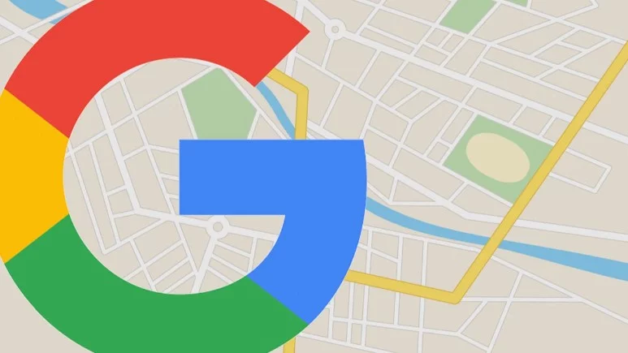
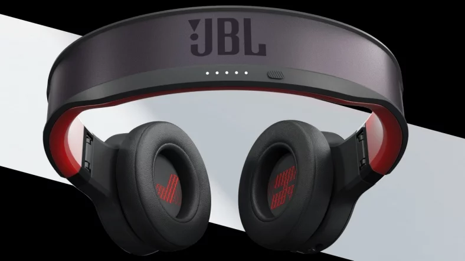

Google'ın Konum Geçmişi'ni kapatıldığında dahi kullanıcıları izlediğinin ortaya çıkmasının ardından Birleşik Devletler'de Google'a gizlilik haklarını ihlal ettiği gerekçesiyle dava açıldı.

Google'a 'Konum Geçmişi' Skandalı ile İlgili Milyonlarca Kişiyi Etkileyebilecek Bir Dava Açıldı

JBL'in Güneş Enerjisi ile Çalışan, Neredeyse Sınırsız Pil Ömürlü Yeni Kulaklıkları
Dünyanın en popüler ses sistemleri üreticilerinden biri olan JBL, güneş enerjisi ile çalışan ve uygun koşullar altında neredeyse sınırsız pil ömrü vadeden yeni kablosuz kulaklık modeli Reflect Eternal’ı tanıttı.